Private Dining
Impress your guests with multi-course menus prepared and plated in your own kitchen.

Personal Chef Services
From intimate dinners to elevated weekly meal prep, Savory Creations brings restaurant-quality dining to the comfort of your home.
Plan Your Next EventImpress your guests with multi-course menus prepared and plated in your own kitchen.
Customized, ready-to-enjoy meals that nourish your week without sacrificing flavor.
Celebrate milestones with tailored spreads that reflect your story and tastes.
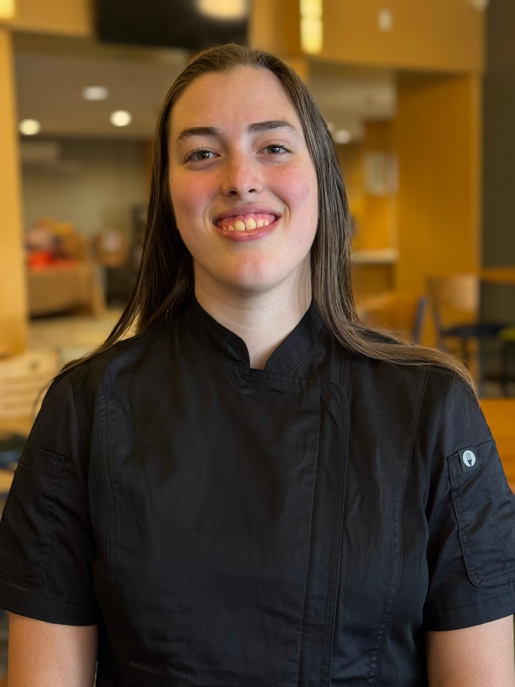
Hello. I’m Katie Bird—the founder and Chef of Savory Creations. I am dedicated to providing nutritious and flavorful meals that will give you more time to do the things you love and less time stressing about what you will eat.
From grocery shopping to cooking and packaging, I handle every step, ensuring that seasonal ingredients take center stage—because quality and taste will always shine through. By working closely with you, I develop recipes catered to your needs, regardless of dietary restrictions or personal preferences. I’m always willing to adapt to fit your lifestyle best.
My goal is to reach those with busy lives who want balanced, delicious meals but lack the time to make them—or those who simply want to learn how to eat well without sacrificing flavor.
I believe that food is one of the few things in life that truly connects everyone. Letting me take over the cooking means you get more time to connect with the people you love—or maybe even start that new passion project.
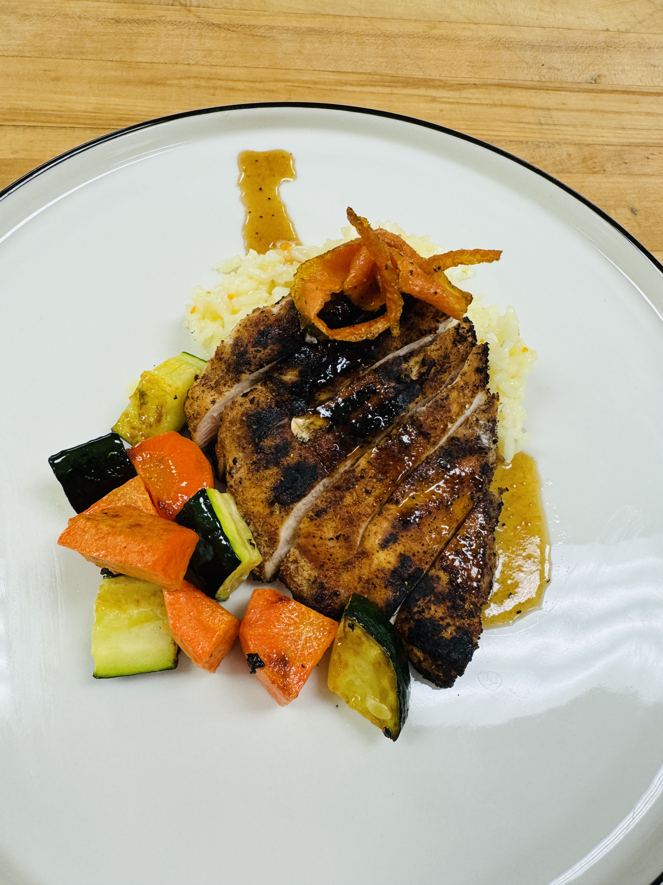
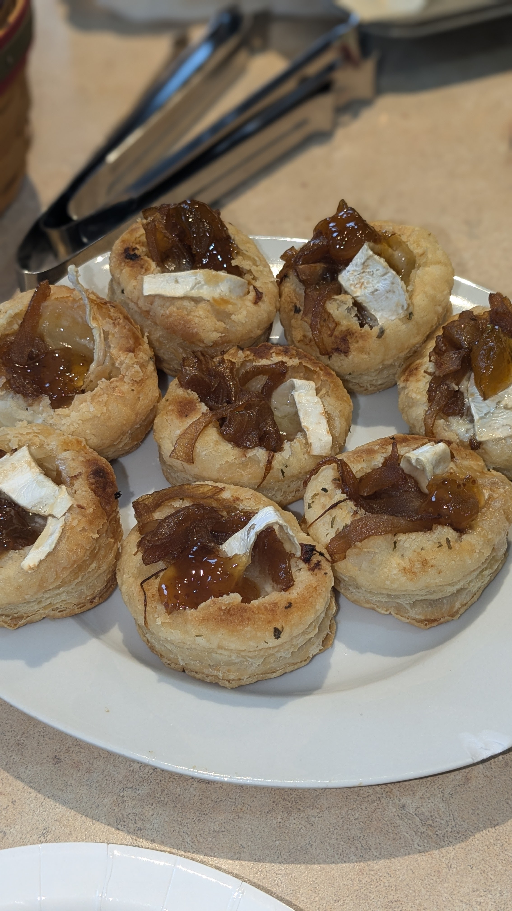
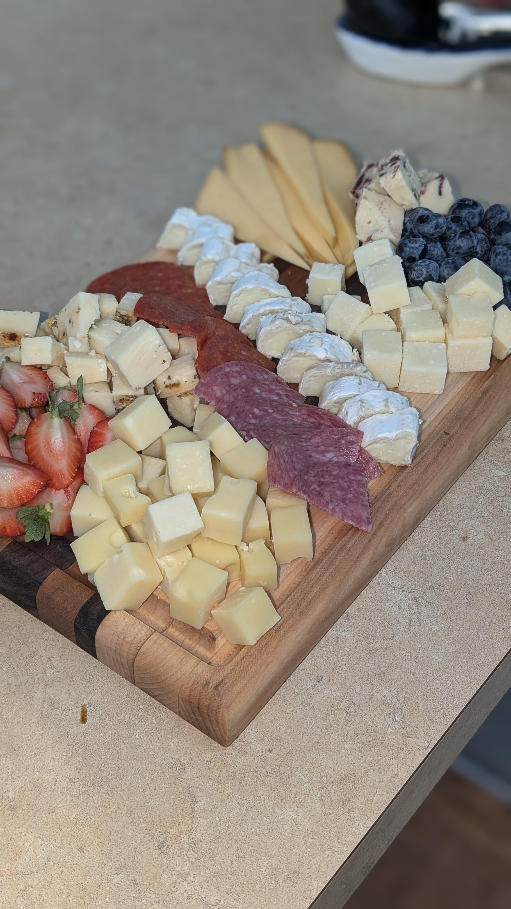
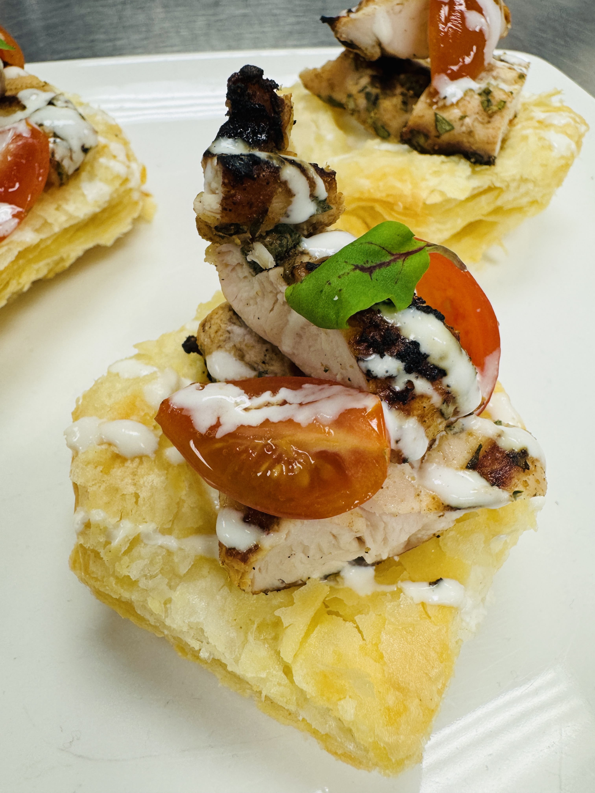
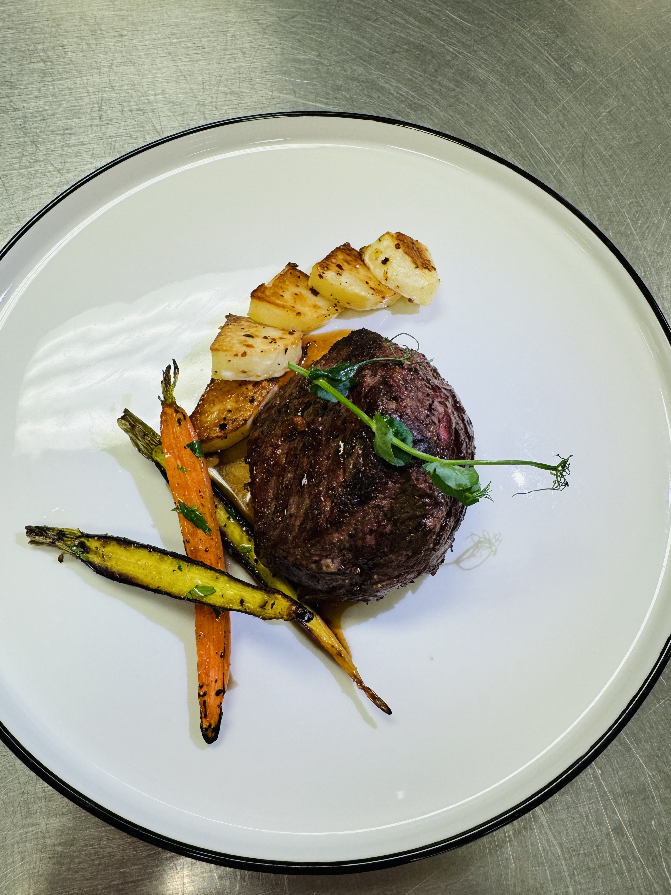
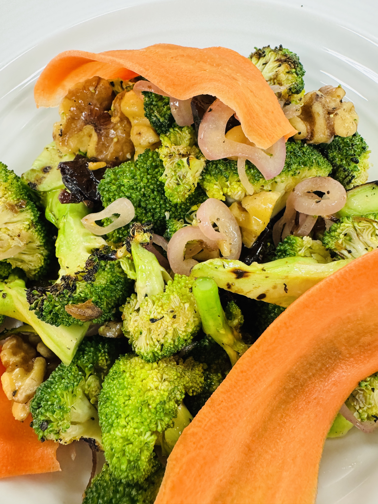
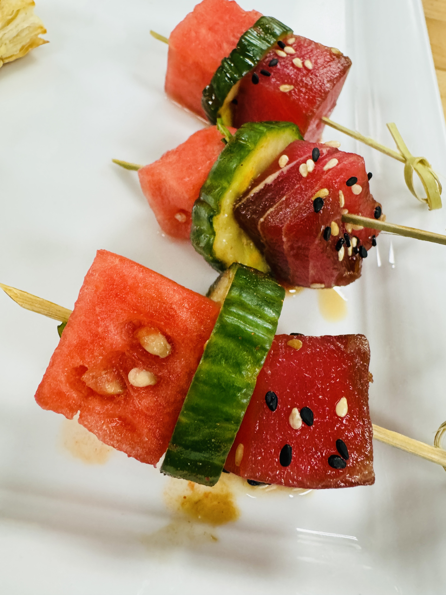
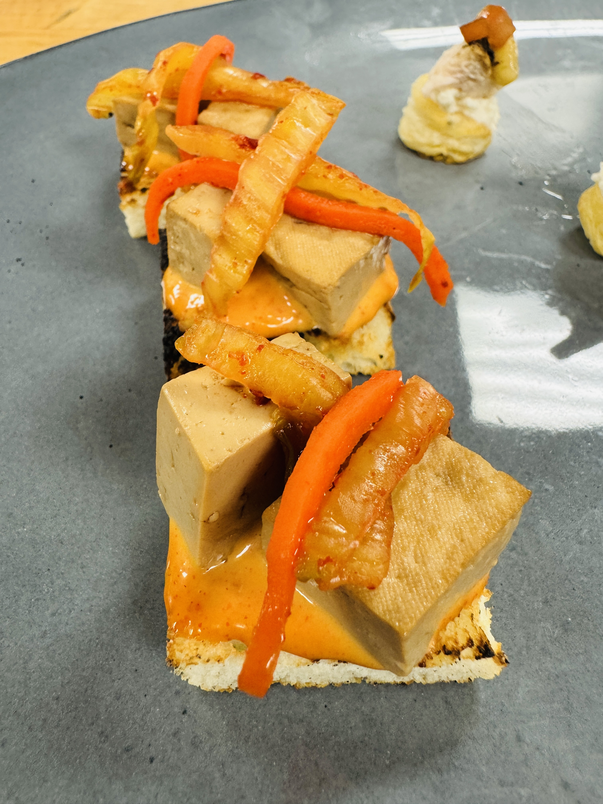
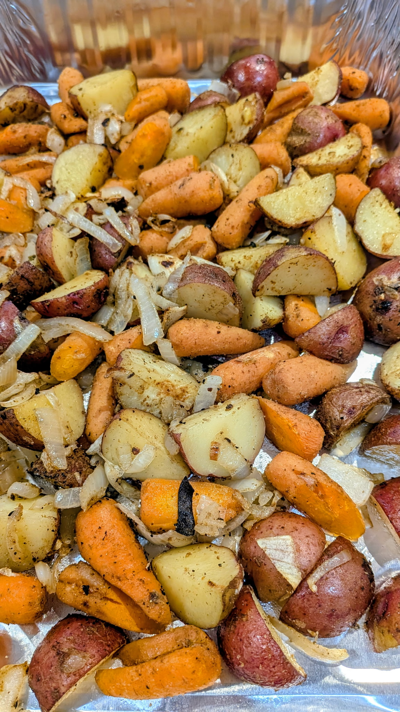
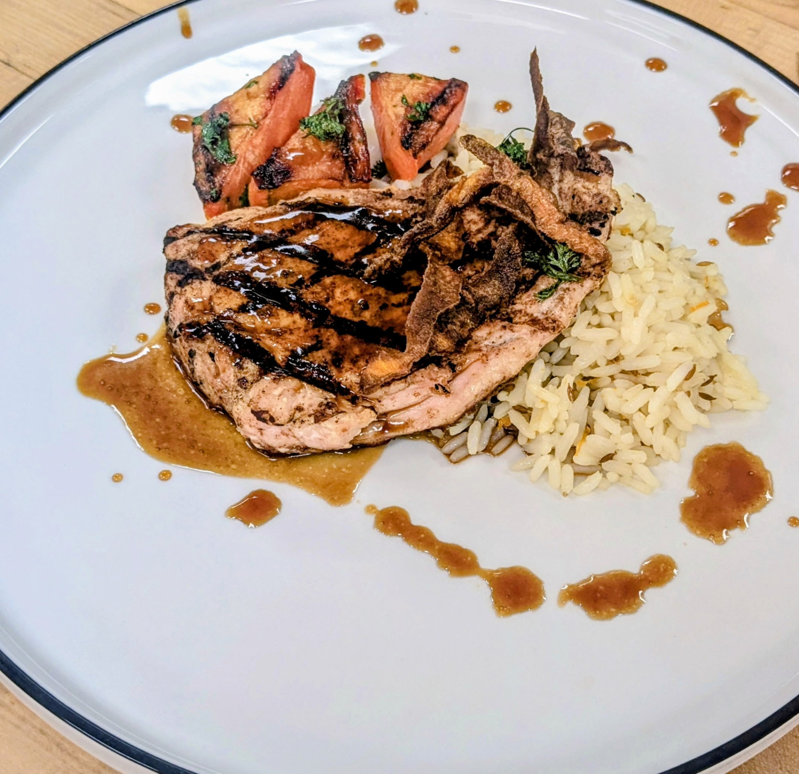
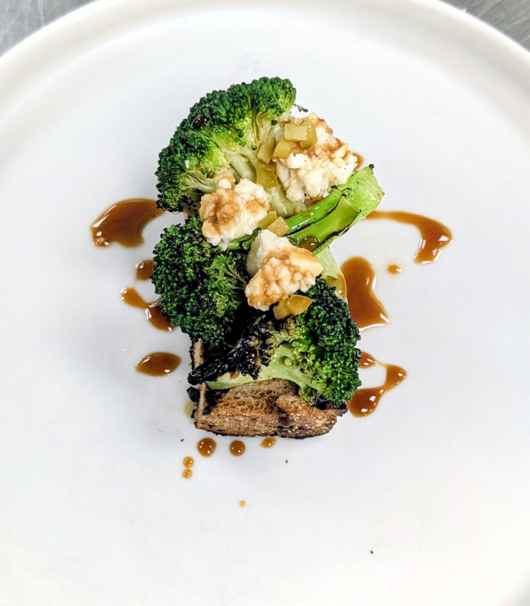
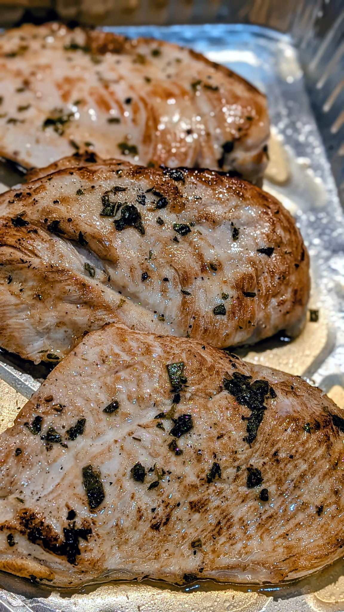
I currently serve the Lakeshore and greater Grand Rapids area.